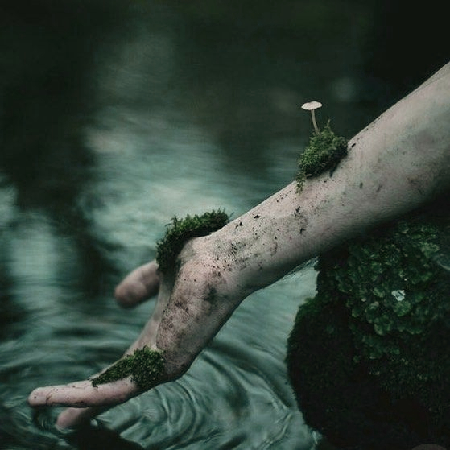
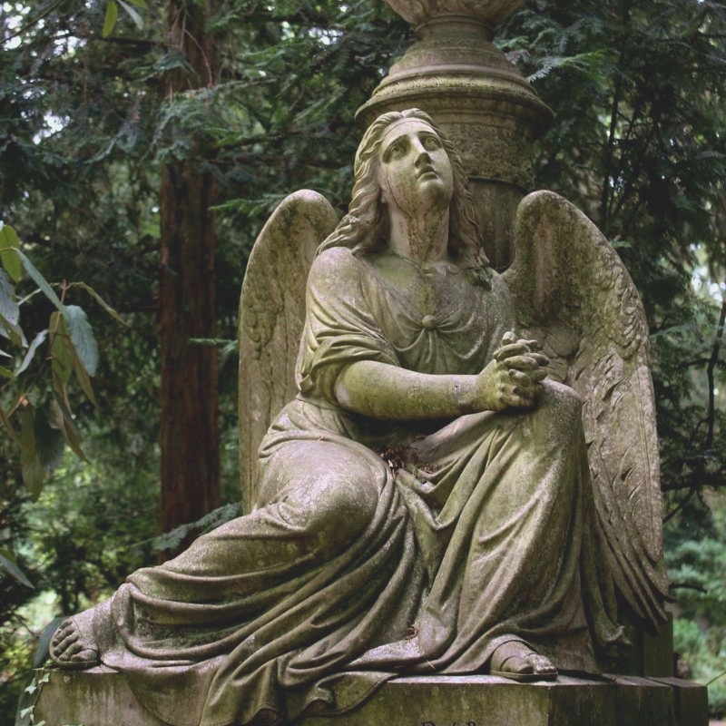

Armanti is a fairly sensitive person who doesn't show it. She seems very sure of herself and decided at first. She is very determined and stubborn.
She is a very religious person, faith has a big place in her life. She also likes to take care of others, and is a very dedicated person.
She possesses fairly weak earth-type magic. Barely able to crack the ground, but that allows her to find his way in space. The seed in his scepter serves as an amplifier of power. Thanks to it, she is now able to create earthquakes.
22 January 1256
Stellaria is the daughter of the Emperor of Painari. She grew up in opulence and wealth and never lacked for anything. Her father was very attached to her and spoiled her enormously to make her forgive his absences. She spent her days surrounded by servants and professors.
She was a curious child who devoured books and was always thirsty for knowledge. However, she had significant socialization difficulties and did not learn to speak until very late. As soon as she learned to read, she began spending her days in the palace library without ever seeking to go outside into the gardens.
Her view of the world was limited to what she could read and what her teachers could teach her.
Stella only knew the story and life of Painari through the books entrusted to her. Her vision of the country was completely utopian. When she met Ilian, she did not understand the anger that drove him. To her, every citizen of Painari was happy.
He showed her his life and that of the lower districts. Although she had little empathy, Stella had a strong sense of equality. For her, a good leader had to treat people well.
That day, she decided to confront her father about the misery she had witnessed. Faced with his lack of reaction, she realized that he was aware of these problems and had chosen to ignore them—or even benefit from them.
She lost all respect for him and decided to join the revolution. She joined Ilian and Mercure among the revolutionaries and helped develop a plan to overthrow her father's government.
Only 13 years old during the revolution, she was nevertheless one of the key figures who helped the people regain power. After faking her death, she had to isolate herself from her hometown and go into exile with Ilian.
After leaving Painari, Ilian and Stella wandered for many months before meeting Signore Resario, director of the circus L'Atrio. They joined his troupe under the stage names Strega and Lupo.
For two years, they traveled across Sadi Dünya with the circus. Thanks to Ilian's power and Stella's ingenuity, they created a spectacle of light and reflections in which Ilian appeared to duplicate himself and emerge all around the audience.
These years allowed Stella to discover the world and its challenges. After some disappointments, she realized two things: to do what you want in this world, you need money—and that you can shape the future by controlling how history is written.
They later decided to travel on their own so Ilian could find his father, Mercure. At his funeral, they met Gyulladt, who offered them work as mercenaries. She entrusted them with many missions while keeping a maternal eye on them in Mercure’s memory.
After several years, Gyulladt recognized Ilian's strength and the power of their duo. During the destruction of Vehmas, she tasked them with finding a mage capable of freeing the hero from eternal ice—and killing him if he repeated the mistakes of the past.
Stella found Sila, a powerful water mage. Once the hero was freed, the four of them fought on the front lines to prevent monsters from invading the territory.
Relations, connexions, etc...

